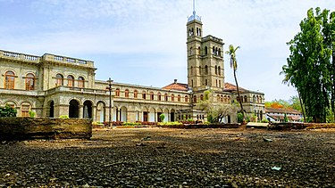
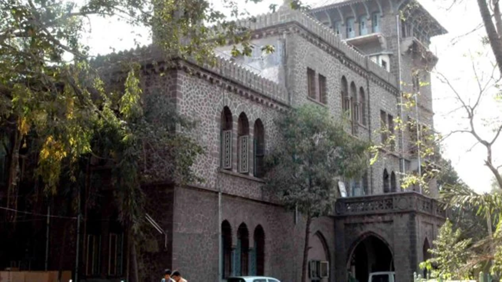
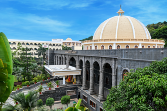
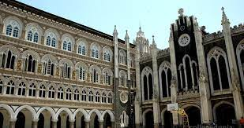

| Image | Description |
|---|---|
|  | Savitribai Phule Pune University (SPPU), formerly the University of Pune, is a public state university located in the city of Pune, India. It was established in 1949, and is spread over a 411 acres (1.66 km2) campus in the neighbourhood of Ganeshkhind.[5] The university houses 46 academic departments. It has about 307 recognised research institutes and 612 affiliated colleges offering graduate and under-graduate courses. Savitribai Phule Pune University Ranked 12th NIRF Ranking in 2022 |
|  | College Of Engineering Pune (COEP) Technological University is a unitary public university of the Government of Maharashtra,[5] situated in Pune, Maharashtra, India. Established in 1854, it is the 3rd oldest engineering institute in India, after College of Engineering, Guindy (1794) and IIT Roorkee (1847).[6][7][8] The students and alumni are colloquially referred to as COEPians.[9] On 23 June 2022, Government of Maharashtra issued a notification regarding conversion of the college into an independent technological university.[10] On 24 March 2022, both the houses of the state government passed the CoEP Technological University bill, which has conferred a unitary state university status on the institute. |
|  | MIT World Peace University,(MIT-WPU) is a private university located in Kothrud, Pune, India.[7][8] It is a part of the MIT Group of Institutions. The university was formerly known as the Maharashtra Institute of Technology which was established in 1983 as the first college of the MAEER group of institutions, and was one of the first private engineering colleges in Maharastra. MAEER was affiliated with Savitribai Phule Pune University (SPPU),[11] which turned into MIT World Peace University, a private university under the guidance of Revered Prof (Dr.) Vishwanath D Karad. |
|  | Fergusson College[2] is an autonomous public-private college offering various courses in the streams of arts and science in the city of Pune, India.[3][4][5] It was founded in 1885 by the Vaman Shriram Apte, Bal Gangadhar Tilak, Vishnushashtri Chiplunkar, Mahadeo Ballal Namjoshi and Gopal Ganesh Agarkar.[6] Professor Vaman Shivram Apte was its first principal.[7] Social reformer, journalist, thinker and educationist Gopal Ganesh Agarkar served as the second principal from August 1892, till his death in June 1895 |